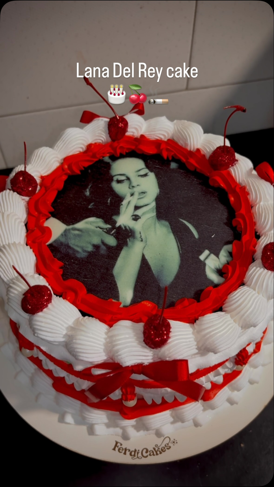
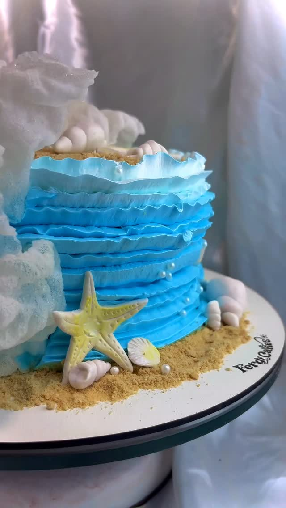

A Arte da Ferdi
A confeiteira que mistura cultura geek, estética vintage e sofisticação culinária.
Nascida da vontade genuína de criar momentos doces e celebrações cheias de personalidade, a Ferdi Cakes nasceu sob a liderança da confeiteira e designer de doces Fernanda Lima (Ferdi). Cada bolo é tratado não apenas como sobremesa, mas como uma verdadeira obra de arte sob medida.
Seja um bolo assustador de RPG, uma homenagem nostálgica aos anos 2010 ou a mais romântica estética Vintage Coquette com cerejas, a Fernanda canaliza toda a sua criatividade para entregar sabor e impacto visual que vão impressionar seus convidados.
O Cardápio de Delícias
Nossos bolos e doces artísticos disponíveis sob encomenda. Escolha sua categoria favorita.
Calculadora de Sonhos
Monte e personalize o bolo perfeito para o seu evento. Veja o orçamento em tempo real e envie o pedido diretamente para o nosso WhatsApp.
1 Escolha o Tamanho
2 Formato do Bolo
3 Escolha o Recheio Principal
4 Recheio Adicional Premium
5 Nível de Arte & Decoração
Bolo Customizado
* O preço calculado é um estimador dinâmico de orçamento. Elementos decorativos extras como flores, topo de acrílico ou esculturas complexas serão alinhados diretamente no atendimento do WhatsApp.
Fazer Pedido no WhatsAppDúvidas Frequentes
Tudo o que você precisa saber sobre o processo de encomenda, pagamentos e logística da Ferdi Cakes.
Informações de Retirada
Para garantir a integridade total do seu bolo artístico decorado, as entregas são coordenadas com muito rigor técnico:
Retirada no Ateliê
O cliente faz a retirada com segurança direta no nosso endereço: Av. Joaquim da Costa Lima, 1083 - Vilar Novo. Belford Roxo - RJ.
Serviços de Entrega por Aplicativo
Se preferir, a coleta pode ser solicitada via aplicativos parceiros de sua preferência como Uber Flash (Carro) ou 99Entregas (Carro).
Importante
NÃO recomendamos a retirada por serviços de entrega em duas rodas (motos), pois o movimento e o calor severo da região podem desestabilizar as decorações complexas de chantininho.
Como cada bolo da Ferdi Cakes é uma produção exclusiva e modelada manualmente com arte personalizada, recomendamos antecedência de pelo menos 3 a 5 dias para Bento Cakes, cupcakes e bolos padrões. Para festas maiores, casamentos e estruturas vintage de alta complexidade, sugerimos reservar a data de 10 a 15 dias antes.
Para segurança e confirmação da sua data em nossa agenda, solicitamos um sinal de 50% do valor orçado via Pix para início da produção. O saldo restante de 50% é pago na entrega/retirada do bolo no local, por Pix ou dinheiro.
Utilizamos chantininho estabilizado e técnicas profissionais de estruturação, garantindo ótima tolerância térmica. No entanto, em dias quentes no Rio de Janeiro, o ideal é manter o bolo refrigerado até cerca de 1 hora antes do parabéns, evitando exposição direta à luz solar e calor extremo de churrasqueiras ou áreas abertas.
Para evitar aquele sabor residual amargo ou dentes manchados pelo uso excessivo de corantes puros (em tons escuros como vermelho, preto ou marinho), a Ferdi Cakes aplica a técnica de pintura por pulverização com aerógrafo. O bolo é revestido com chantininho branco tradicional e a cor escura é borrifada apenas na camada milimétrica mais externa, mantendo a integridade e sabor do bolo original.
Encomende seu Bolo dos Sonhos
Deseja uma decoração única baseada em seu anime favorito, D&D, memórias vintage ou estilo minimalista chic? Fale agora com a Fernanda e garanta uma criação espetacular!